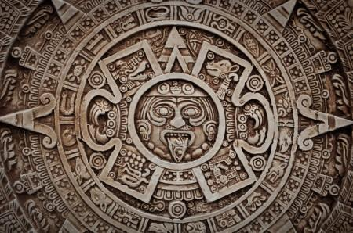

Mayská kultúra bola veľmi vyspelá. Mali knihu popisujúcu ich vznik, mytológiu a historické fakty podobnú Biblii, robili komplikované výpočty, pri ktorých používali dvadsiatkou sústavu a mali zaujímavé kalendáre, veľmi zaujímavé. Mayovia počas dlhého času pozorovali oblohu a tak poznávali cykly a pohyby rôznych astronomických telies. Preto vytvorili viacero kalendárov, ja tu budem písať o dvoch z nich.
Mayovia označovali dátum ako deň a mesiac astronomického kalendára a zároveň deň a mesiac náboženského kalendára. Napríklad vieme, že podľa Mayov svet vznikol 4 Ahau 8 Cumku (11 augusta 3114 pred Kristom). Dátum 4 Ahau 8 Cumku sa opakoval každých 52 rokov. Na zápis presného dátumu používali iný spôsob známe ako „Dlhý počet“ ale na bežný život takýto zápis bol dostatočný dlhý.
Aj keď som o nich písal ako mayských kalendároch, pravda je taká, že Mayovia ich pravdepodobne nevymysleli. Podobné kalendáre používali všetky Mezoamerické (kultúry medzi stredným Mexikom a severnou časti strednej Ameriky) kultúry ako napríklad: Olmekovia, Zapotekovia, alebo Aztékovia.

Mayovia vedeli, že astronomický rok trvá viac ako 365 dní, ale to pre účely, na ktoré slúžili tieto kalendáre, nebolo dôležité.
Keď sa hovorí o týchto kalendároch, často sa ukazujú dve ozubené kolesá, jedno veľké s 365 zubami a druhé malé s 260 zubami, ktoré sa točia proti sebe. Je to pedagogický nástroj.